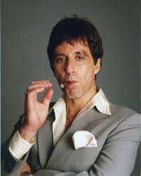
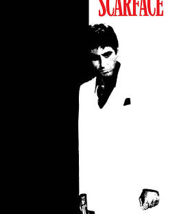

 
Pacino worked with producer Martin Bregman to develop the project. Bregman and Sidney Lumet both conceived the idea of setting the story during the boatlift. Lumet was initially hired to direct the film but left, feeling that it was too violent and wanted it to be more of a political film. De Palma was replaced as director and Bregman hired Stone to write the script. Stone, who had been struggling with his own cocaine addiction at the time, wrote the script in Paris. The film was initially going to be entirely shot in Miami, but the Cuban community denied requests to film there, feeling that the script portrayed them in a bad light. Filming took place from November 1982 to May 1983 in Los Angeles and two weeks in Miami. soundtrack was composed by Giorgio Moroder.
What really stands out in the series is that instead of focusing more on the plot of "collecting something value" it is more of a father-son feel which the newer movies did not held
this up, within the fact that this includes the german regime, we can give off a perspective of how germany was so high tech enough to trying to take indiana jones down and
collect the artifcat for themselves. and as a whole, this could be the greatest movie in the franchise.
i love this movie since this gives off the harsh realities and struggle of the american dream and a way to become wealthy and happy, it is just similiar to purgatory. Not only that, this teaches the lesson of changing your minds in something, as you have to be cautious when achieving something.
My contact information:
Ronald Ortiz
Bayonne, NJ 07002
Email me here.
Last updated on May 11, 2026